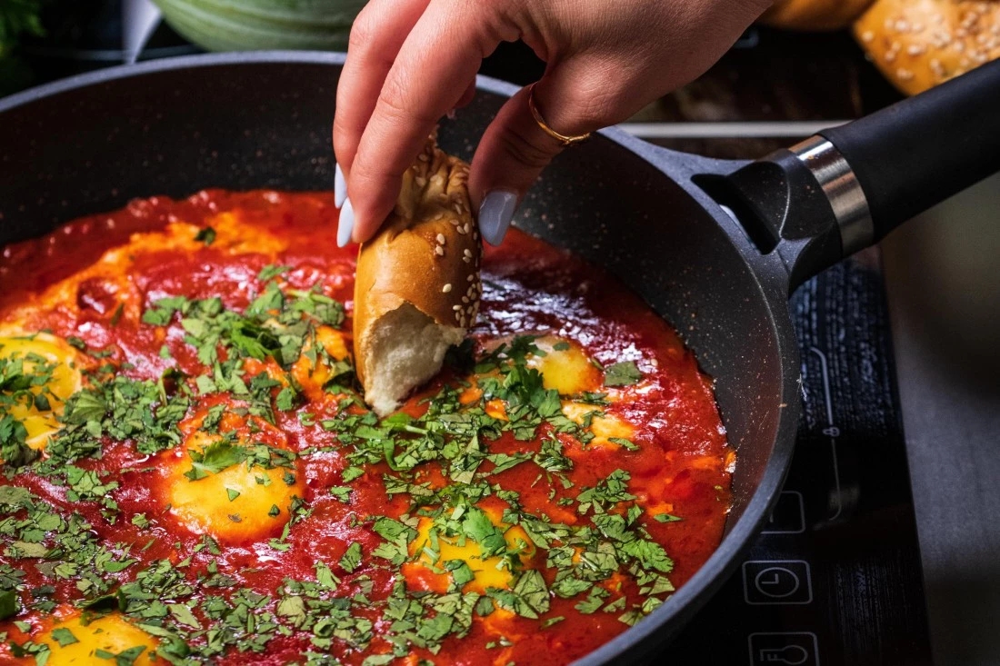
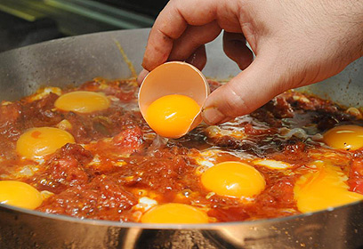

Classic Shakshuka

- 4 fresh eggs
- 1 can of crushed tomatoes
- 1 red bell pepper, chopped
- 2 cloves of garlic, minced
- 1 tsp paprika
- Olive oil, salt, and pepper
the process:

- Sauté the bell pepper, and garlic in olive oil until soft.
- Pour in the crushed tomatoes and spices. Let it simmer for 10 minutes.
- Make small wells in the sauce and crack the eggs into them.
- Cover the pan and cook until the eggs are set. Enjoy!